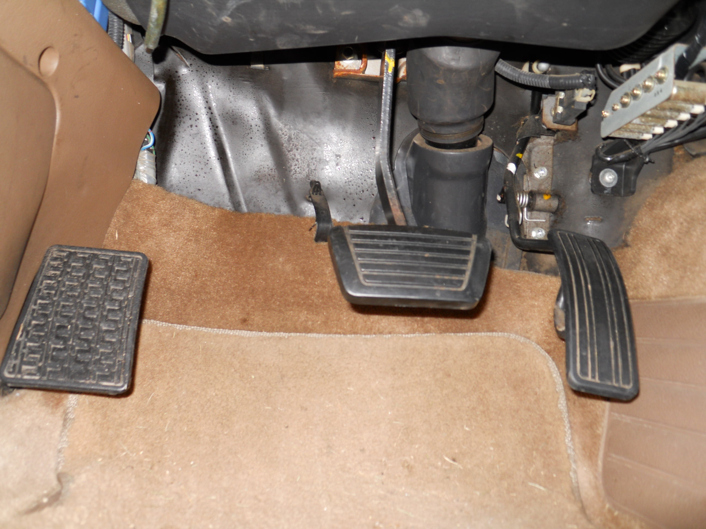
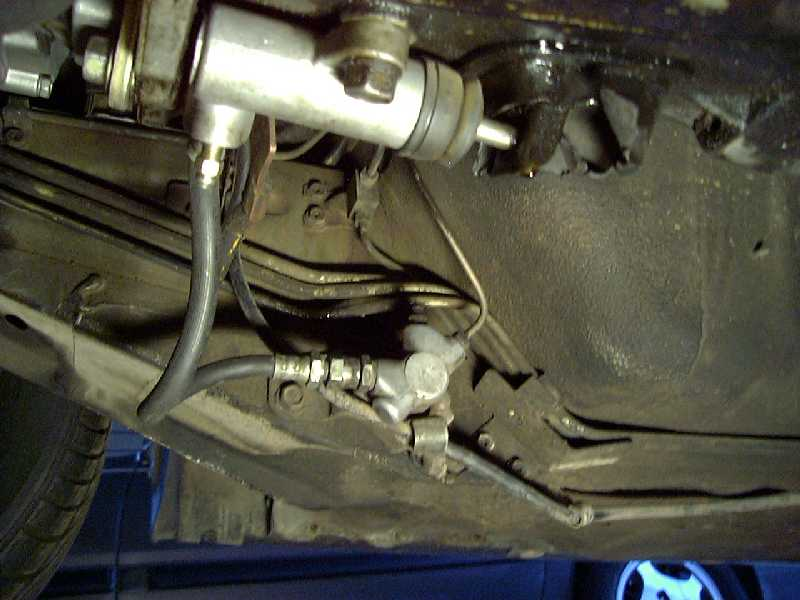
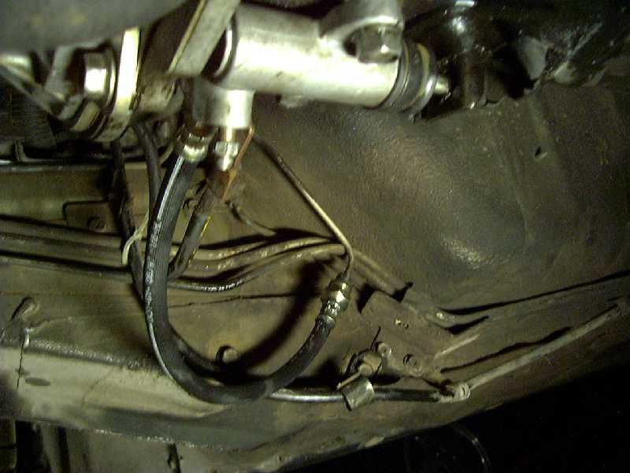

-
I'm getting a list together of all the parts I need for the 5-speed swap into the 84 Turbo. The guide on XenonZcar.com says you need to get the speedometer pinion cable if you have the analog dash. I have the digital dash, and I believe the digital dash uses a speed sensor instead of a speedometer pinion cable. Does the automatic already come with a speed sensor that will be compatible with the 5-speed?
The guide also says that you need the brake pedal assembly while another guide says you only need the brake pedal and not the entire brake pedal assembly. To me it looks like most clutch pedal assemblies come equipped with the brake pedal in addition to the clutch pedal. So if I get a clutch pedal assembly for the Z31, that should already include the brake pedal right? -
Your speed sensor should be by the battery with the speedo cable going to it. If the cable from the trans to speed sensor is different, then you would need the cable for a stick digital dash Z. You should check to see if the speed sensors have the same part # too.
I wish I still had access to my fiche machine, makes looking stuff up like this so much easier. Anyone have an online fiche? I think Zbum used to have one, but I don't think the links work anymore. Might be able to call the dealer and ask them if they would look up the parts for you / interchange.
Are you asking if you need to swap the brake / clutch pedals as an assembly or if you just need the clutch pedal parts?
I would think if someone is selling it used and if it unbolts together, they would sell it together because it's easier, but I would ask them. -
Yes, I know. That would be convenient. I have an FSM here, but looking it up on the fiche machine would be a cinch. I can still check the part numbers parts.nissan.usa or my local dealer's parts website to see if the part number are the same.I wish I still had access to my fiche machine
That's not what I'm asking. My questions are related to the guide on XenonZcar.com. It states you need the clutch pedal assembly and the brake pedal assembly. A Youtube guide says you only need the brake pedal. Why do they tell you that LOL? The picture below shows the clutch pedal, the brake pedal, and the gas pedal as one assembly. Information about the Z31 online is sometimes inaccurate.Are you asking if you need to swap the brake / clutch pedals as an assembly…
Z31 Clutch Pedal Assembly
300ZX_Z31_Brake_Pedal_Assembly.jpg
Good news is that I've already managed to locate a good shift knob, shift, boot and center console trim bezel for the swap.
-
Ahh, the brake pedal pad is smaller / angled vs the auto brake pedal, that's why. -
Does that pic look like one unit? To me it looks like three separate pieces in the pic.Originally posted by daniel_pearce View Post -
Yeah, looks like separate pieces. I went out and took pics of manual vs auto pedals. Looks like you could use the auto pedal and just add the clutch, but I wouldn't. It would be too close together for me.
 -
I've been thinking on this swap myself, to install the pedals in the pic, do you have to pull the dash? -
There's a write up on XenonZcar http://www.xenonzcar.com/z31/autotomanualswap.html
No dash removal necessary. -
Oh I see now. The parts in the pic I posted look like one unit at first, but they're separate units lying neatly against the wall. That would make good for one of those optical illusion pics.
I don't like the auto brake pedal either. It's too wide, so I'll have to find a manual brake pedal. -
Thanks, Yeah I read that. I was wondering if you take the pedals apart that are in the pics or just bolt those in? The instructions seemed pretty vague.Originally posted by Dunkine View Post -
That's a good question. From the pic I posted, it looks like they're three separate components that you bolt in minus the gas pedal since you've already got that.
Also, is the clutch master cylinder and hydraulic line the same from 84-89 or will I need to get an 87-89 master cylinder and line if I go with the FS5R30A? -
I have this book marked as an upgrade for the hose, someone posted it, can't remember who. https://www.summitracing.com/parts/e…3erl/overview/
The hardline, clutch cyl, clutch damper, slave cyl, hose from slave to damper should be all the same.
But before you go swapping stuff, decide if you are going to use the Clutch Damper. I am deleting it off both my stick cars at some point cause they can be a PITA, another step in bleeding and on my 87 the bleeder broke off. There's a write up on ZBum's mirrored page http://zbum.suomiz.net/modification.clutch.damper.shtml showing how to use a 280z brake hose to bypass the Clutch Damper. (pictures off zbum's site)


If the hoses are the same, just different length, you could probably just bend the hardline over. I've also seen a piece to replace the damper for sale somewhere. I was going to make a little piece of hardline up to replace the damper if it will screw into the factory line or see if that 13inch braided line is long enough.Last edited by Dunkine; 10-28-2017, 03:05 PM. Reason: pic size -
Good info. What is it's use for? Does it give different pedal feel without it? Being used to the early S30's, when I read that being there I was like hugh?Last edited by JSM; 10-29-2017, 05:38 PM. -
I have heard of someone using the 280zx brake hose to bypass the clutch damper before. It's supposed to give a more positive feel to the clutch instead of the sloppy feel. However, I read up on the purpose of the clutch damper and it seems like an important part even though it involves an extra step to bleeding the clutch. It is supposed to reduce vibration in the driveline created from engine oscillation ensuring longevity of driveline components. Therefore, I haven't decided if I am going to use the clutch damper yet or not. Still, this is good information and it should be stickied.hjbqh-6337707301@sale.craigslist.org-
 #14.1Dunkine commentedWithout the damper you push on the clutch pedal, the master cly pushes the fluid to the slave cyl, clutch fork moves, clutch disengages. Release pedal, opposite happens. It's a direct link between slave and master cyl. Adding the SS line may even help this more over the 30 year old rubber hose.
#14.1Dunkine commentedWithout the damper you push on the clutch pedal, the master cly pushes the fluid to the slave cyl, clutch fork moves, clutch disengages. Release pedal, opposite happens. It's a direct link between slave and master cyl. Adding the SS line may even help this more over the 30 year old rubber hose.
The damper introduces a delay in response, mainly when pulling away from a stop, so if someone lets off the clutch to fast (ie new stick drivers), it's supposed to help lessen "dumping" the clutch. At least that's what I think they had in mind for it. It's another insulator from the car, just like the sloppy 60a hardness bushings/mounts/insulators.
This could also be an issue for higher horsepower Z's if it causes clutch slippage.
-
-
That is odd. I'm not sure how that is possible. Dunkine description makes the most sense, at least to me.Originally posted by daniel_pearce View Post

Copyright © 2006–. All rights reserved. Privacy Policy
Comment